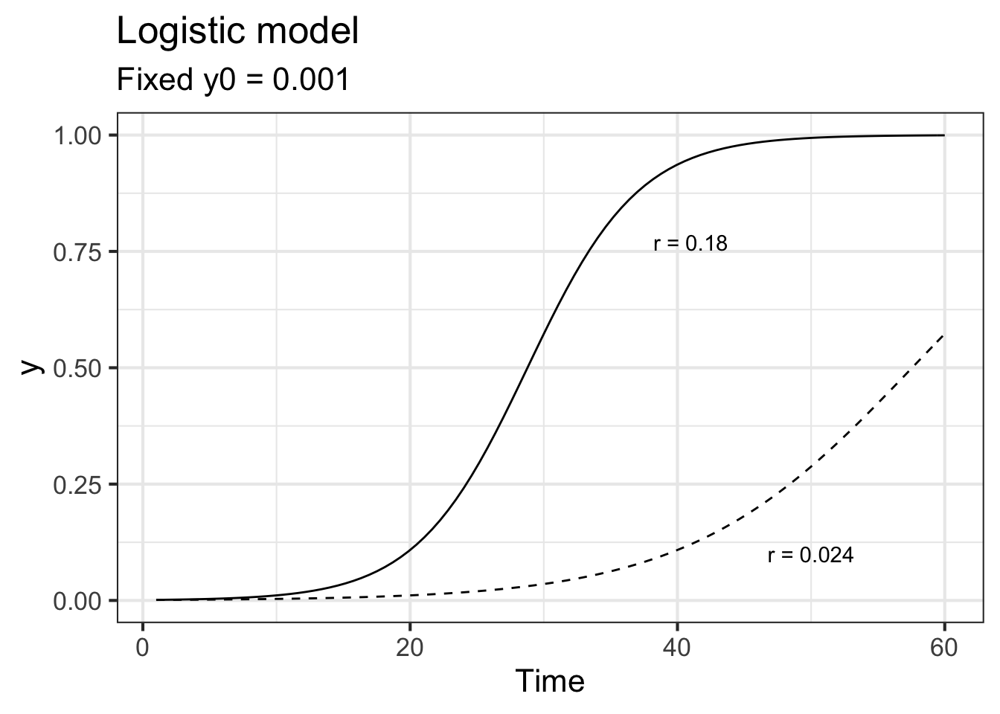
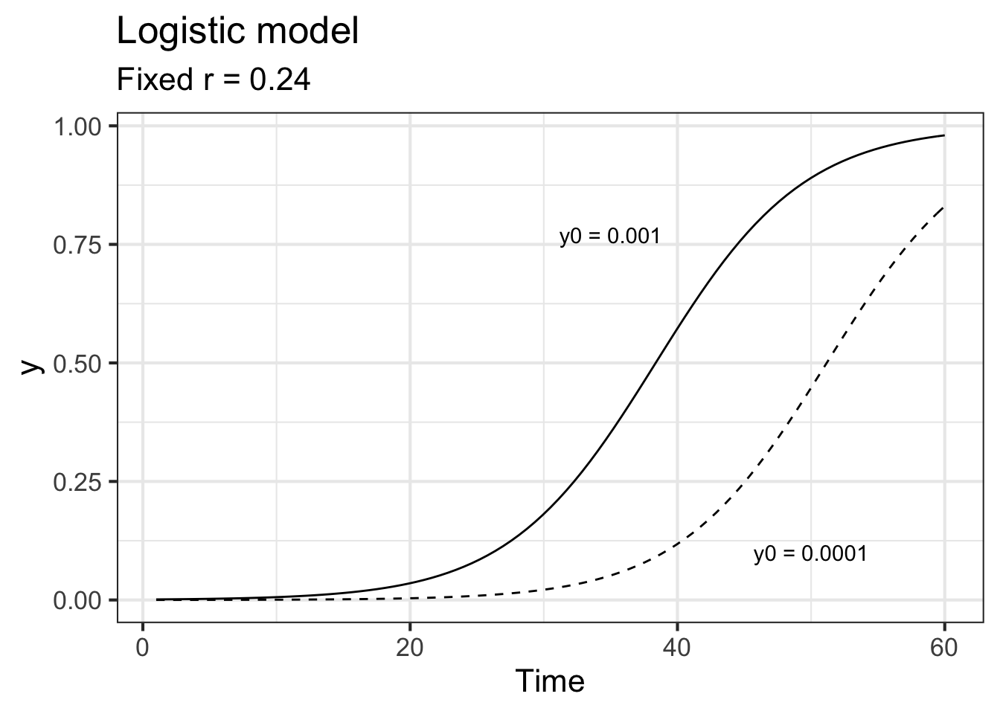
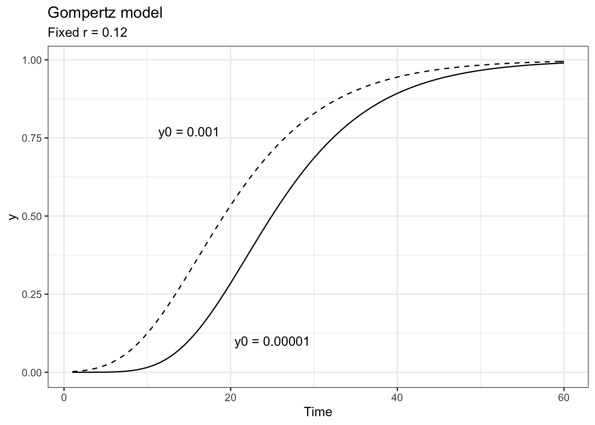
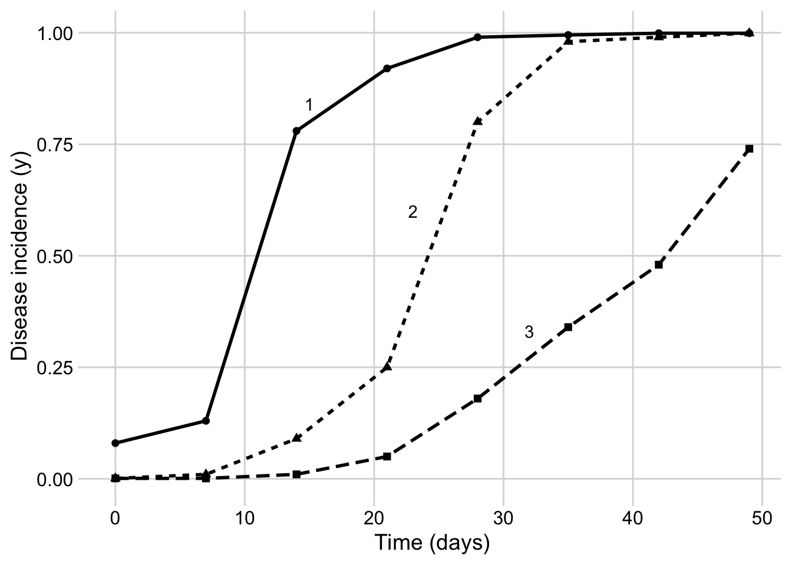
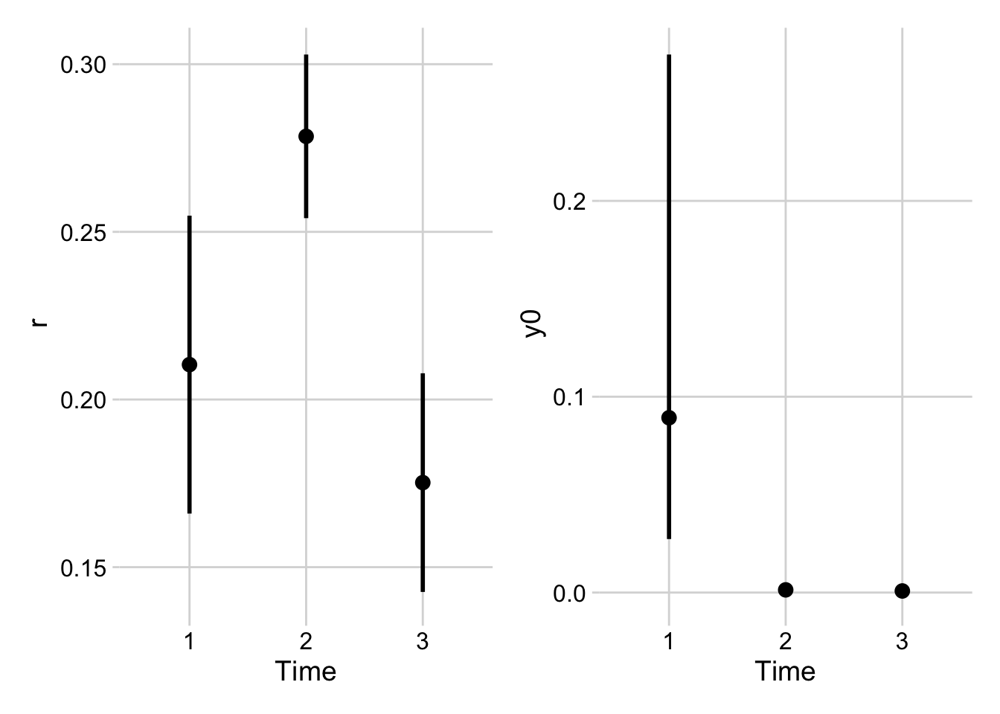
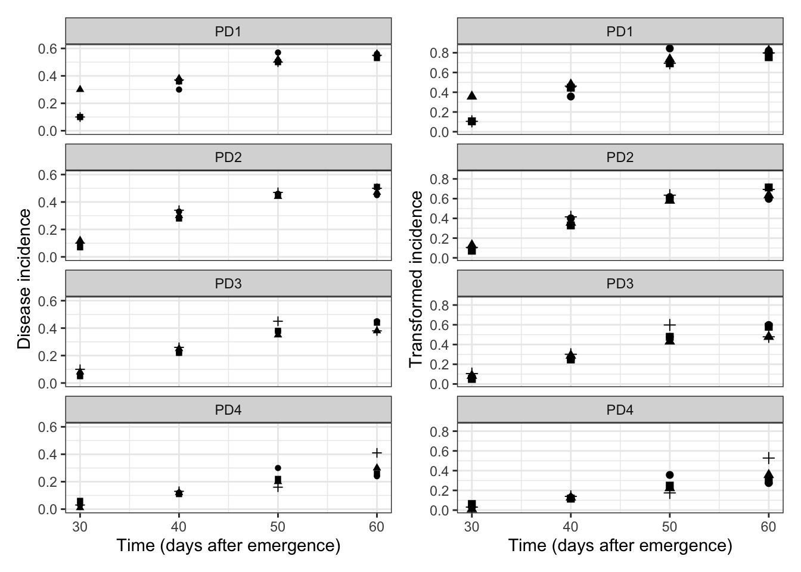
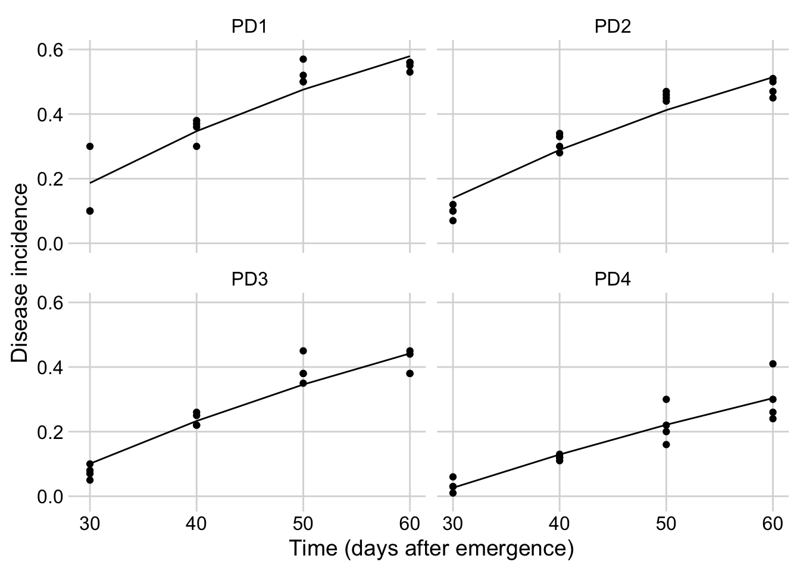
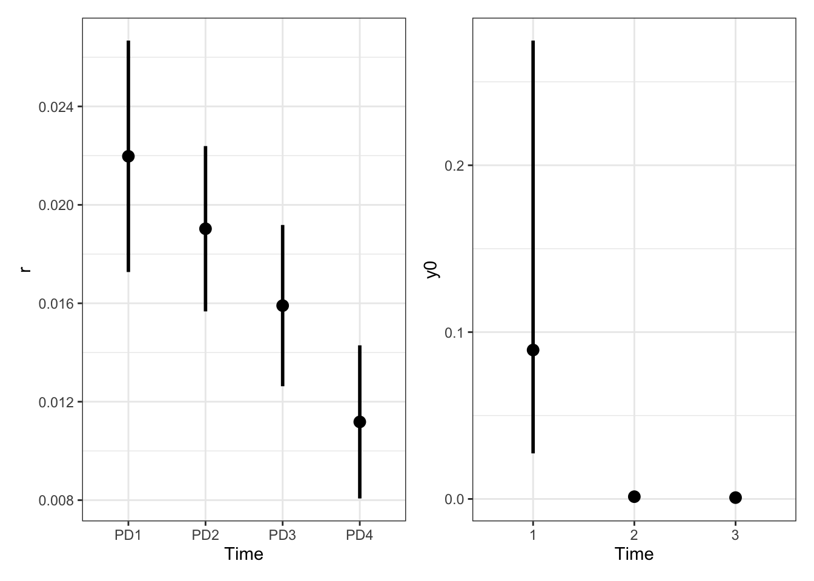
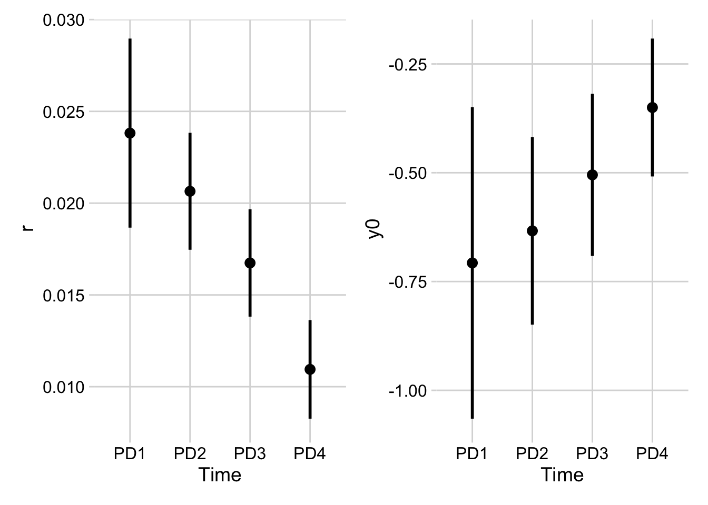

library(tidyverse) # essential packages
library(cowplot) # for themes
theme_set(theme_minimal_grid()) # set global theme2 Temporal analysis
This is a work in progress that is currently undergoing heavy technical editing and copy-editing
2.1 Introduction
A key understanding of the epidemics relates to the knowledge of rates and patterns. Epidemics can be viewed as dynamic systems that change their state as time goes. The first and simplest way to characterize such changes in time is to produce a graphical plot called disease progress curve (DPC). This curve can be obtained as long as the intensity of the disease (y) in the host population is assessed sequentially in time (t).
A DPC summarizes the interaction of the three main components of the disease triangle occurring during the epidemic. The curves can vary greatly in shape according to variations in each of the components, in particular due to management practices that alter the course of the epidemics and for which the goal is to stop disease increase. We can create a dataframe in R for a single DPC and make a plot using ggplot. By convention we use t for time and y for disease intensity, expressed in proportion (0 to 1).
Firstly, let’s load the essential R packages and set up the environment.
There are several ways to create a dataframe in R. I like to use the tribble function as below. The entered data will be assigned to a dataframe called dpc.
dpc <-
tribble(
~t, ~`y`,
0, 0.08,
7, 0.13,
14, 0.78,
21, 0.92,
28, 0.99,
35, 0.995,
42, 0.999,
)Now the plot
Note
Note that I use the pipe operator |> in my programming to express a sequence of multiple operations in a more intuitive way.
dpc |>
ggplot(aes(t, y)) +
geom_point(size = 2)+
geom_line(size = 1)+
labs(x = "Assessment time (days)",
y = "Disease intensity")
2.2 Curve descriptors: AUDPC
The depiction and analysis of disease progress curves can provide useful information for gaining understanding of the underlying epidemic process. The curves are extensively used to evaluate how disease control measures affect epidemics. When characterizing DPCs, a researcher may be interested in describing and comparing epidemics that result from different treatments, or simply in their variations as affected by changes in environment, host or pathogen.
The precision and complexity of the analysis of progress curve data depends on the objective of the study. In general, the goal is to synthesize similarities and different among epidemics based on common descriptors of the disease progress curves. For example, the simple appraisal of the disease intensity at any time during the course of the epidemic should be sufficient for certain situations. Furthermore, a few descriptors can be extracted including the epidemic duration, the initial and maximum disease, and the area under the disease progress curve (AUDPC).
The AUDPC summarizes the “total measure of disease stress” and is largely used to compare epidemics (Jeger and Viljanen-Rollinson 2001). The most common approach to calculate AUDPC is the trapezoidal method, which splits the disease progress curves into a series of rectangles, calculating the area of each of them and then summing the areas. Let’s extend the plot code to show those rectangles using the annotate function.
dpc |>
ggplot(aes(t, y)) +
geom_point(size = 2)+
geom_line(size = 1)+
labs(x = "Assessment time (days)",
y = "Disease intensity",
title ="Area under the disease progress curve",
subtitle = "Calculated using the trapezoidal method")+
annotate("rect", xmin = dpc$t[1], xmax = dpc$t[2],
ymin = 0, ymax = (dpc$y[1]+ dpc$y[2])/2,
color = "black", alpha = 0.5)+
annotate("rect", xmin = dpc$t[2], xmax = dpc$t[3],
ymin = 0, ymax = (dpc$y[2]+ dpc$y[3])/2,
color = "black", alpha = 0.5)+
annotate("rect", xmin = dpc$t[3], xmax = dpc$t[4],
ymin = 0, ymax = (dpc$y[3]+ dpc$y[4])/2,
color = "black", alpha = 0.5)+
annotate("rect", xmin = dpc$t[4], xmax = dpc$t[5],
ymin = 0, ymax = (dpc$y[4]+ dpc$y[5])/2,
color = "black", alpha = 0.5)+
annotate("rect", xmin = dpc$t[5], xmax = dpc$t[6],
ymin = 0, ymax = (dpc$y[5]+ dpc$y[6])/2,
color = "black", alpha = 0.5)+
annotate("rect", xmin = dpc$t[6], xmax = dpc$t[7],
ymin = 0, ymax = (dpc$y[6]+ dpc$y[7])/2,
color = "black", alpha = 0.5)
In R, we can obtain the AUDPC for the DPC we created earlier using the AUDPC function offered by the epifitter package. Because we are using the percent data, we need to set the argument y_proportion = FALSE. The function returns the absolute AUDPC. If one is interested in relative AUDPC, the argument type should be set to "relative". There is also the alternative to AUDPC, the area under the disease progress stairs (AUDPS) (Simko and Piepho 2012).
library(epifitter)
AUDPC(dpc$t, dpc$y,
y_proportion = FALSE)[1] 30.4815# The relative AUDPC
AUDPC(dpc$t, dpc$y,
y_proportion = FALSE,
type = "relative")[1] 0.0072575# To calculate AUDPS, the alternative to AUDPC
AUDPS(dpc$t, dpc$y,
y_proportion = FALSE)[1] 34.258Mathematical models can be fitted to the DPC data to express epidemic progress in terms of rates and absolute/relative quantities. The latter can be accomplished using population dynamics (or growth-curve) models for which the estimated parameters are usually meaningful biologically and appropriately describe epidemics that do not decrease in disease intensity. By fitting an appropriate model to the progress curve data, another set of parameters is available to the researcher when attempting to represent, understand or compare epidemics.
2.3 Population dynamics models
The family of models that describe the growth of epidemics, hence population dynamics model, are known as deterministic models of continuous time (Madden et al. 2017). These models are usually fitted to DPC data to obtain two or more biologically meaningful parameters. Here, these models and their formulations are shown using R scripts to simulate the theoretical curves for each model.
2.3.1 Non-flexible models
These population dynamics models require at least two parameters, hence they are known as non-flexible, as opposed to the flexible ones for which there are at least one additional (third) parameter.
Following the convention proposed by (Madden et al. 2017) in their book “The study of plant disease epidemics”:
time is represented by \(t\)
disease intensity by \(y\)
the rate of change in \(y\) between two time units is represented by \(\frac{dy}{dt}\)
Now we can proceed and learn which non-flexible models exist and for which situation they are more appropriate.
2.3.1.1 Exponential
The differential equation for the exponential model is given by
\(\frac{dy}{dt} = r_E.y\),
where \(r_E\) is the apparent infection rate (subscript E for this model) (sensu Vanderplank) and \(y\) is the disease intensity. Biologically, this formulation suggests that diseased plants, or \(y\), and \(r_E\) at each time contribute to disease increase. The value of \(\frac{dy}{dt}\) is minimal when \(y = 0\) and increases exponentially with the increase in \(y\).
The integral for the exponential model is given by
\(y = y_0 e^{r_Et}\),
where \(y0\) is and \(r\) are obtained via estimation. Let’s simulate two curves by varying \(r\) while fixing \(y0\) and varying the latter while fixing \(r_E\). We produce the two plots in ggplot and add the predicted curve using the `stat_function`. But first, we need to define values for the two model parameters. Further modifications to these values will be handled directly in the simulation (e.g. doubling infection rate, reducing initial inoculum by half, etc.).
y0 <- 0.001
r <- 0.06
tmax <- 60 # maximum duration t of the epidemics
dat <- data.frame(t = seq(1:tmax), y = seq(0:1)) # define the axesIn the plot below, note that the infection rate in one curve was doubled (\(r\) = 0.12)
dat |>
ggplot(aes(t, y)) +
stat_function(fun = function(t) y0 * exp(r * t), linetype = 1) +
stat_function(fun = function(t) y0 * exp(r * 2 * t), linetype = 2) +
ylim(0, 1) +
labs(
title = "Exponential model",
subtitle = "2 times r (dashed) same y0",
x = "Time"
)Warning: Removed 5 row(s) containing missing values (geom_path).
Now the inoculum was increased five times while using the same doubled rate.
dat |>
ggplot(aes(t, y)) +
stat_function(fun = function(t) y0 * exp(r * 2 * t), linetype = 1) +
stat_function(fun = function(t) y0 * 5 * exp(r * 2 * t), linetype = 2) +
ylim(0, 1) +
labs(title = "Exponential model", x = "Time",
subtitle = "5 times y0 (dashed) same r")Warning: Removed 5 row(s) containing missing values (geom_path).Warning: Removed 27 row(s) containing missing values (geom_path).
2.3.1.2 Monomolecular
The differential of the monomolecular model is given by
\(\frac{dy}{dt} = r_M (1-y)\)
where now the \(r_M\) is the rate parameter of the monomolecular model and \((1-y)\) is the proportion of non-infected (healthy) individuals or host tissue. Note that \(\frac{dy}{dt}\) is maximum when \(y = 0\) and decreases when \(y\) approaches 1. Its decline is due to decrease in the proportion of individuals or healthy sites with the increase in \(y\). Any inoculum capable of infecting the host will more likely land on infected individuals or sites.
The integral of the monomolecular model is given by
\(\frac{dy}{dt} = 1 - (1-y)e^{-r_Mt}\)
This model commonly describes the temporal patterns of the monocyclic epidemics. In those, the inoculum produced during the course of the epidemics do not contribute new infections. Therefore, different from the exponential model, disease intensity \(y\) does not affect the epidemics and so the absolute rate is proportional to \((1-y)\).
Let’s simulate two monomolecular curve with different rate parameters where one is one third of the other.
dat |>
ggplot(aes(t, y)) +
stat_function(fun = function(t) 1 - ((1 - y0) * exp(-r * t))) +
stat_function(fun = function(t) 1 - ((1 - y0) * exp(-(r / 3) * t))) +
labs(title = "Monomolecular model",
subtitle = "Fixed y0 = 0.001", x = "Time"
) +
annotate(geom = "text", x = 35, y = 0.77, label = "r = 0.06") +
annotate(geom = "text", x = 50, y = 0.55, label = "r = 0.02")
Now inoculum was increased 100 times with the reduced rate.
dat |>
ggplot(aes(t, y)) +
stat_function(fun = function(t) 1 - ((1 - y0) * exp(-r / 2 * t))) +
stat_function(fun = function(t) 1 - ((1 - (y0 * 100)) * exp(-r / 2 * t))) +
labs(title = "Monomolecular model",
subtitle = "Fixed r = 0.06", x = "Time") +
annotate(geom = "text", x = 35, y = 0.77, label = "y0 = 0.01") +
annotate(geom = "text", x = 45, y = 0.65, label = "y0 = 0.001")
2.3.1.3 Logistic
The logistic model is a more elaborated version of the two previous models as it incorporates the features of them both. Its differential is given by
\(\frac{dy}{dt} = r_L. y . (1 - y)\),
where \(r_L\) is the infection rate of the logistic model, \(y\) is the proportion of diseased individuals or host tissue and \((1-y)\) is the proportion of non-affected individuals or host area.
Biologically, \(y\) in its differential equation implies that \(\frac{dy}{dt}\) increases with the increase in \(y\) (as in the exponential) because more disease means more inoculum. However, \((1-y)\) leads to a decrease in \(\frac{dy}{dt}\) when \(y\) approaches the maximum \(y=1\), because the proportion of healthy individuals or host area decreases (as in the monomolecular). Therefore, \(\frac{dy}{dt}\) is minimal at the onset of the epidemics, reaches a maximum when \(y/2\) and declines until \(y=1\).
The integral is given by
\(y = \frac{1}{1 + (1-y_0).e^{-r.t}}\),
where \(r_L\) is the apparent infection rate of the logistic model and \(y0\) is the disease intensity at \(t=0\). This model provides a good fit to polycyclic epidemics.
Let’s check two curves where in one the infection rate is double while keeping the same initial inoculum.
dat |>
ggplot(aes(t, y)) +
stat_function(
linetype = 2,
fun = function(t) 1 / (1 + ((1 - y0) / y0) * exp(-r * 2 * t))
) +
stat_function(fun = function(t) 1 / (1 + ((1 - y0) / y0) * exp(-r * 4 * t))) +
labs(title = "Logistic model", subtitle = "Fixed y0 = 0.001", x = "Time") +
annotate(geom = "text", x = 41, y = 0.77, label = "r = 0.18") +
annotate(geom = "text", x = 50, y = 0.10, label = "r = 0.024")
Now the inoculum is reduced 10 times for a same infection rate.
dat |>
ggplot(aes(t, y)) +
stat_function(
linetype = 2,
fun = function(t) 1 / (1 + ((1 - (y0 / 10)) / (y0 / 10)) * exp(-r * 3 * t))
) +
stat_function(fun = function(t) 1 / (1 + ((1 - y0) / y0) * exp(-r * 3 * t))) +
labs(title = "Logistic model", subtitle = "Fixed r = 0.24", x = "Time") +
annotate(geom = "text", x = 35, y = 0.77, label = "y0 = 0.001") +
annotate(geom = "text", x = 50, y = 0.10, label = "y0 = 0.0001")
2.3.1.4 Gompertz
The Gompertz model is similar to the logistic and also provides a very good fit to several polycyclic diseases. The differential equation is given by
\(\frac{dy}{dt} = r_G.[ln(1) - ln(y)]\)
Differently from the logistic, the variable representing the non-infected individuals or host area is \(-ln(y)\). The integral equation is given by
\(y = e^{(ln(y0)).{e^{-r_G.t)}}}\),
where \(r_G\) is the apparent infection rate for the Gompertz models and \(y_0\) is the disease intensity at \(t = 0\).
Let’s check curves for two rates.
dat |>
ggplot(aes(t, y)) +
stat_function(
linetype = 2,
fun = function(t) exp(log(y0) * exp(-r/2 * t))
) +
stat_function(fun = function(t) exp(log(y0) * exp(-r*2 * t))) +
labs(title = "Gompertz model", subtitle = "Fixed y0 = 0.001", x = "Time") +
annotate(geom = "text", x = 41, y = 0.77, label = "r = 0.12") +
annotate(geom = "text", x = 50, y = 0.10, label = "r = 0.03")
And those when inoculum was reduced thousand times.
dat |>
ggplot(aes(t, y)) +
stat_function(
linetype = 2,
fun = function(t) exp(log(y0) * exp(-r*2 * t))
) +
stat_function(fun = function(t) exp(log(y0/1000) * exp(-r*2 * t))) +
labs(title = "Gompertz model", subtitle = "Fixed r = 0.12", x = "Time") +
annotate(geom = "text", x = 15, y = 0.77, label = "y0 = 0.001") +
annotate(geom = "text", x = 25, y = 0.10, label = "y0 = 0.00001")
2.4 Fitting models to data
Next, you will learn how to fit models to multiple actual disease progress curves (DPCs) data obtained from the literature. I will demonstrate how to fit and select the models using the epifitter package. A few user friendly functions will help us decide which model to choose to obtain the parameters of interest and further compare the epidemics.
To illustrate, I will use two datasets available from Chapter 3 from the book, Study of Plant Disease Epidemics (Madden et al. 2017). In the book, SAS codes are presented to perform a few analysis. We then provide an alternative code for performing similar analysis, although not perfectly reproducing the results from the book.
2.4.1 Non-replicated epidemics
We will compare three DPCs of the incidence of tobacco etch, a virus disease, in peppers. Evaluations of incidence were evaluated at a 7-day interval, up to 49 days.The data are available in chapter 4 (page 93). Let’s input the data manually and create a data frame. First column is the assessment time and the other columns correspond to the treatments, called groups in the book, from 1 to 3.
2.4.2 Entering data
pepper <-
tribble(
~t, ~`1`, ~`2`, ~`3`,
0, 0.08, 0.001, 0.001,
7, 0.13, 0.01, 0.001,
14, 0.78, 0.09, 0.01,
21, 0.92, 0.25, 0.05,
28, 0.99, 0.8, 0.18,
35, 0.995, 0.98, 0.34,
42, 0.999, 0.99, 0.48,
49, 0.999, 0.999, 0.74
) 2.4.3 Visualize the DPCs
Before proceeding with model selection and fitting, let’s visualize the three epidemics. The code below reproduces quite exactly the top plot of Fig. 4.15 ((Madden et al. 2017) page 94). The appraisal of the curves might give us a hint on which models are the best candidates.
Because the data was entered in the wide format (each DPCs in a different columns) we need to reshape it to the long format. The pivot_longer function will do the job of reshaping from wide to long format so we can finally use the ggplot function to produce the plot.
pepper |>
pivot_longer(2:4, names_to ="treat", values_to = "inc") |>
ggplot (aes(t, inc,
linetype = treat,
shape = treat,
group = treat))+
geom_point(size =2)+
geom_line(size = 1)+
annotate(geom = "text", x = 15, y = 0.84, label = "1")+
annotate(geom = "text", x = 23, y = 0.6, label = "2")+
annotate(geom = "text", x = 32, y = 0.33, label = "3")+
labs(y = "Disease incidence (y)",
x = "Time (days)")+
theme(legend.position = "none")
Most of the three curves show a sigmoid shape with the exception of group 3 that resembles an exponential growth, not reaching the maximum value, and thus suggesting an incomplete epidemic. We can easily eliminate the monomolecular and exponential models and decide on the other two non-flexible models: logistic or Gompertz. To do that, let’s proceed to model fitting and evaluate the statistics for supporting a final decision. There are two modeling approaches for model fitting in epifitter: the linear or nonlinear parameter-estimation methods.
2.4.4 Fitting: single epidemics
Among the several options offered by epifitter we start with the simplest one, which is fit a model to a single epidemics using the linear regression approach. For such, the fit_lin() requires two arguments: time (time) and disease intensity (y) each one as a vector stored or not in a dataframe.
Since we have three epidemics, fit_lin() will be use three times. The function produces a list object with six elements. Let’s first look at the Stats dataframe of each of the three lists named epi1 to epi3.
library(epifitter)
epi1 <- fit_lin(time = pepper$t,
y = pepper$`1` )
epi1$Stats CCC r_squared RSE
Gompertz 0.9848 0.9700 0.5911
Monomolecular 0.9838 0.9681 0.5432
Logistic 0.9782 0.9572 0.8236
Exponential 0.7839 0.6447 0.6705epi2 <- fit_lin(time = pepper$t,
y = pepper$`2` )
epi2$Stats CCC r_squared RSE
Logistic 0.9962 0.9924 0.4524
Gompertz 0.9707 0.9431 0.8408
Monomolecular 0.9248 0.8601 1.0684
Exponential 0.8971 0.8134 1.2016epi3 <- fit_lin(time = pepper$t,
y = pepper$`3` )
epi3$Stats CCC r_squared RSE
Logistic 0.9829 0.9665 0.6045
Gompertz 0.9825 0.9656 0.2263
Exponential 0.9636 0.9297 0.7706
Monomolecular 0.8592 0.7531 0.2534The statistics of the model fit confirms our initial guess that the predictions by the logistic or the Gompertz are closer to the observations than predictions by the other models. There is no much difference between them based on these statistics. However, to pick one of the models, it is important to inspect the curves with the observed and predicted values to check which model is best for all curves.
2.4.5 Fitting: multiple epidemics
Before looking at the prediction, let’s use another handy function that allows us to simultaneously fit the models to multiple DPC data. Different from fit_lin(), fit_multi() requires the data to be structured in the long format where there is a column specifying each of the epidemics.
Let’s then create a new data set called pepper2 using the data transposing functions of the tidyr package.
pepper2 <- pepper |>
pivot_longer(2:4, names_to ="treat", values_to = "inc")Now we fit the models to all DPCs. Note that the name of the variable indicating the DPC code needs to be informed in strata_cols argument.
epi_all <- fit_multi(
time_col = "t",
intensity_col = "inc",
data = pepper2,
strata_cols = "treat",
nlin = FALSE
)Now let’s select the statistics of model fitting. Again, Epifitter ranks the models based on the CCC (the higher the better) but it is important to check the RSE as well - the lower the better. In fact, the RSE is more important when the goal is prediction.
epi_all$Parameters |>
select(treat, model, best_model, RSE, CCC) treat model best_model RSE CCC
1 1 Gompertz 1 0.5911056 0.9847857
2 1 Monomolecular 2 0.5431977 0.9838044
3 1 Logistic 3 0.8235798 0.9781534
4 1 Exponential 4 0.6705085 0.7839381
5 2 Logistic 1 0.4523616 0.9961683
6 2 Gompertz 2 0.8407922 0.9707204
7 2 Monomolecular 3 1.0683633 0.9247793
8 2 Exponential 4 1.2015809 0.8971003
9 3 Logistic 1 0.6045243 0.9829434
10 3 Gompertz 2 0.2262550 0.9824935
11 3 Exponential 3 0.7705736 0.9635747
12 3 Monomolecular 4 0.2533763 0.8591837To be more certain about our decision, let’s advance to the final step which is to produce the plots with the observed and predicted values for each assessment time by calling the Data dataframe of the `epi_all list.
epi_all$Data |>
filter(model %in% c("Gompertz", "Logistic")) |>
ggplot(aes(time, predicted, shape = treat)) +
geom_point(aes(time, y)) +
geom_line() +
facet_wrap(~ model) +
coord_cartesian(ylim = c(0, 1)) + # set the max to 0.6
labs(
y = "Disease incidence",
x = "Time (days after emergence)"
)
Overall, the logistic model seems a better fit for all the curves. Let’s produce a plot with the prediction error versus time.
epi_all$Data |>
filter(model %in% c("Gompertz", "Logistic")) |>
ggplot(aes(time, predicted -y, shape = treat)) +
geom_point() +
geom_line() +
geom_hline(yintercept = 0, linetype =2)+
facet_wrap(~ model) +
coord_cartesian(ylim = c(-0.4, 0.4)) + # set the max to 0.6
labs(
y = "Prediction error",
x = "Time (days after emergence)"
)
The plots above confirms the logistic model as good fit overall because the errors for all epidemics combined are more scattered around the non-error line.
epi_all$Parameters |>
filter(model == "Logistic") |>
select(treat, y0, y0_ci_lwr, y0_ci_upr, r, r_ci_lwr, r_ci_upr
) treat y0 y0_ci_lwr y0_ci_upr r r_ci_lwr r_ci_upr
1 1 0.0935037690 0.0273207272 0.274728744 0.2104047 0.1659824 0.2548270
2 2 0.0013727579 0.0006723537 0.002800742 0.2784814 0.2540818 0.3028809
3 3 0.0008132926 0.0003131745 0.002110379 0.1752146 0.1426077 0.2078215We can produce a plot for visual inference on the differences in the parameters.
p1 <- epi_all$Parameters |>
filter(model == "Logistic") |>
ggplot(aes(treat, r)) +
geom_point(size = 3) +
geom_errorbar(aes(ymin = r_ci_lwr, ymax = r_ci_upr),
width = 0,
size = 1
) +
labs(
x = "Time",
y = "r"
)
p2 <- epi_all$Parameters |>
filter(model == "Logistic") |>
ggplot(aes(treat, 1 - exp(-y0))) +
geom_point(size = 3) +
geom_errorbar(aes(ymin = y0_ci_lwr, ymax = y0_ci_upr),
width = 0,
size = 1
) +
labs(
x = "Time",
y = "y0"
)
library(patchwork)
Attaching package: 'patchwork'The following object is masked from 'package:cowplot':
align_plotsp1 | p2
2.4.6 Designed experiments
In this next section, we will work with disease data collected over time in the same plot unit (also called repeated measures) from a designed experiment for evaluating and comparing treatment effects.
Again, we will use a dataset of progress curves shown in page 98 (Madden et al. 2017). The curves represent the incidence of soybean plants symptomatic for bud blight caused by tobacco streak virus. Four treatments (different planting dates) were evaluated in randomized complete block design with four replicates. There are four assessment in time for each curve. The data was stored as a csv file and will be loaded using read_csv() function and stored as dataframe called budblight.
2.4.6.1 Loading data
budblight <- read_csv("data/bud-blight-soybean.csv")
── Column specification ────────────────────────────────────────────────────────
cols(
treat = col_character(),
time = col_double(),
block = col_double(),
y = col_double()
)Let’s have a look at the first six rows of the dataset and check the data type for each column. There is an additional column representing the replicates, called block.
head(budblight)# A tibble: 6 × 4
treat time block y
<chr> <dbl> <dbl> <dbl>
1 PD1 30 1 0.1
2 PD1 30 2 0.3
3 PD1 30 3 0.1
4 PD1 30 4 0.1
5 PD1 40 1 0.3
6 PD1 40 2 0.38####Visualizing the DPCs
Let’s have a look at the curves and produce a combo plot figure similar to Fig. 4.17 of the book, but without the line of the predicted values.
p3 <- budblight |>
ggplot(aes(
time, y,
group = block,
shape = factor(block)
)) +
geom_point(size = 1.5) +
ylim(0, 0.6) +
theme(legend.position = "none")+
facet_wrap(~treat, ncol =1)+
labs(y = "Disease incidence",
x = "Time (days after emergence)")p4 <- budblight |>
ggplot(aes(
time, log(1 / (1 - y)),
group = block,
shape = factor(block)
)) +
geom_point(size = 2) +
facet_wrap(~treat, ncol = 1) +
theme(legend.position = "none")+
labs(y = "Transformed incidence", x = "Time (days after emergence)")
p3 | p4
2.4.6.2 Model fitting
Remember that the first step in model selection is the visual appraisal of the curve data linearized with the model transformation. In the case the curves represent complete epidemics (close to 100%) appraisal of the absolute rate (difference in y between two times) over time is also helpful.
For the treatments above, it looks like the curves are typical of a monocyclic disease (the case of soybean bud blight), for which the monomolecular is usually a good fit, but other models are also possible as well. For this exercise, we will use both the linear and the nonlinear estimation method.
2.4.6.2.1 Linear regression
For convenience, we use the fit_multi() to handle multiple epidemics. The function returns a list object where a series of statistics are provided to aid in model selection and parameter estimation. We need to provide the names of columns (arguments): assessment time (time_col), disease incidence (intensity_col), and treatment (strata_cols).
lin1 <- fit_multi(
time_col = "time",
intensity_col = "y",
data = budblight,
strata_cols = "treat",
nlin = FALSE
)Let’s look at how well the four models fitted the data. Epifitter suggests the best fitted model (1 to 4, where 1 is best) for each treatment. Let’s have a look at the statistics of model fitting.
lin1$Parameters |>
select(treat, best_model, model, CCC, RSE) treat best_model model CCC RSE
1 PD1 1 Monomolecular 0.9348429 0.09805661
2 PD1 2 Gompertz 0.9040182 0.22226189
3 PD1 3 Logistic 0.8711178 0.44751963
4 PD1 4 Exponential 0.8278055 0.36124036
5 PD2 1 Monomolecular 0.9547434 0.07003116
6 PD2 2 Gompertz 0.9307192 0.17938711
7 PD2 3 Logistic 0.9062012 0.38773023
8 PD2 4 Exponential 0.8796705 0.32676216
9 PD3 1 Monomolecular 0.9393356 0.06832499
10 PD3 2 Gompertz 0.9288436 0.17156394
11 PD3 3 Logistic 0.9085414 0.39051075
12 PD3 4 Exponential 0.8896173 0.33884790
13 PD4 1 Gompertz 0.9234736 0.17474422
14 PD4 2 Monomolecular 0.8945962 0.06486949
15 PD4 3 Logistic 0.8911344 0.52412586
16 PD4 4 Exponential 0.8739618 0.49769642And now we extract values for each parameter estimated from the fit of the monomolecular model.
lin1$Parameters |>
filter(model == "Monomolecular") |>
select(treat, y0, r) treat y0 r
1 PD1 -0.5727700 0.02197351
2 PD2 -0.5220593 0.01902952
3 PD3 -0.4491365 0.01590586
4 PD4 -0.3619898 0.01118047Now we visualize the fit of the monomolecular model (using filter function - see below) to the data together with the observed data and then reproduce the right plots in Fig. 4.17 from the book.
lin1$Data |>
filter(model == "Monomolecular") |>
ggplot(aes(time, predicted)) +
geom_point(aes(time, y)) +
geom_line(size = 0.5) +
facet_wrap(~treat) +
coord_cartesian(ylim = c(0, 0.6)) + # set the max to 0.6
labs(
y = "Disease incidence",
x = "Time (days after emergence)"
)
Now we can plot the means and respective 95% confidence interval of the apparent infection rate (\(r\)) and initial inoculum (\(y_0\)) for visual inference.
p5 <- lin1$Parameters |>
filter(model == "Monomolecular") |>
ggplot(aes(treat, r)) +
geom_point(size = 3) +
geom_errorbar(aes(ymin = r_ci_lwr, ymax = r_ci_upr),
width = 0,
size = 1
) +
labs(
x = "Time",
y = "r"
)
p6 <- lin1$Parameters |>
filter(model == "Monomolecular") |>
ggplot(aes(treat, 1 - exp(-y0))) +
geom_point(size = 3) +
geom_errorbar(aes(ymin = y0_ci_lwr, ymax = y0_ci_upr),
width = 0,
size = 1
) +
labs(
x = "Time",
y = "y0"
)
p5 | p2
2.4.6.2.2 Non-linear regression
To estimate the parameters using the non-linear approach, we repeat the same arguments in the fit_multi function, but include an additional argument nlin set to TRUE.
nlin1 <- fit_multi(
time_col = "time",
intensity_col = "y",
data = budblight,
strata_cols = "treat",
nlin = TRUE
)Warning in log(y0/1): NaNs produced
Warning in log(y0/1): NaNs produced
Warning in log(y0/1): NaNs producedLet’s check statistics of model fit.
nlin1$Parameters |>
select(treat, model, CCC, RSE, best_model) treat model CCC RSE best_model
1 PD1 Monomolecular 0.9382991 0.06133704 1
2 PD1 Gompertz 0.9172407 0.06986307 2
3 PD1 Logistic 0.8957351 0.07700720 3
4 PD1 Exponential 0.8544194 0.08799512 4
5 PD2 Monomolecular 0.9667886 0.04209339 1
6 PD2 Gompertz 0.9348370 0.05726761 2
7 PD2 Logistic 0.9077857 0.06657793 3
8 PD2 Exponential 0.8702365 0.07667322 4
9 PD3 Monomolecular 0.9570853 0.04269129 1
10 PD3 Gompertz 0.9261609 0.05443852 2
11 PD3 Logistic 0.8997106 0.06203037 3
12 PD3 Exponential 0.8703443 0.06891021 4
13 PD4 Monomolecular 0.9178226 0.04595409 1
14 PD4 Gompertz 0.9085579 0.04791331 2
15 PD4 Logistic 0.8940731 0.05083336 3
16 PD4 Exponential 0.8842437 0.05267415 4And now we obtain the two parameters of interest. Note that the values are not the sames as those estimated using linear regression, but they are similar and highly correlated.
nlin1$Parameters |>
filter(model == "Monomolecular") |>
select(treat, y0, r) treat y0 r
1 PD1 -0.7072562 0.02381573
2 PD2 -0.6335713 0.02064629
3 PD3 -0.5048763 0.01674209
4 PD4 -0.3501234 0.01094368p7 <- nlin1$Parameters |>
filter(model == "Monomolecular") |>
ggplot(aes(treat, r)) +
geom_point(size = 3) +
geom_errorbar(aes(ymin = r_ci_lwr, ymax = r_ci_upr),
width = 0,
size = 1
) +
labs(
x = "Time",
y = "r"
)
p8 <- nlin1$Parameters |>
filter(model == "Monomolecular") |>
ggplot(aes(treat, y0)) +
geom_point(size = 3) +
geom_errorbar(aes(ymin = y0_ci_lwr, ymax = y0_ci_upr),
width = 0,
size = 1
) +
labs(
x = "Time",
y = "y0"
)
p7 | p8